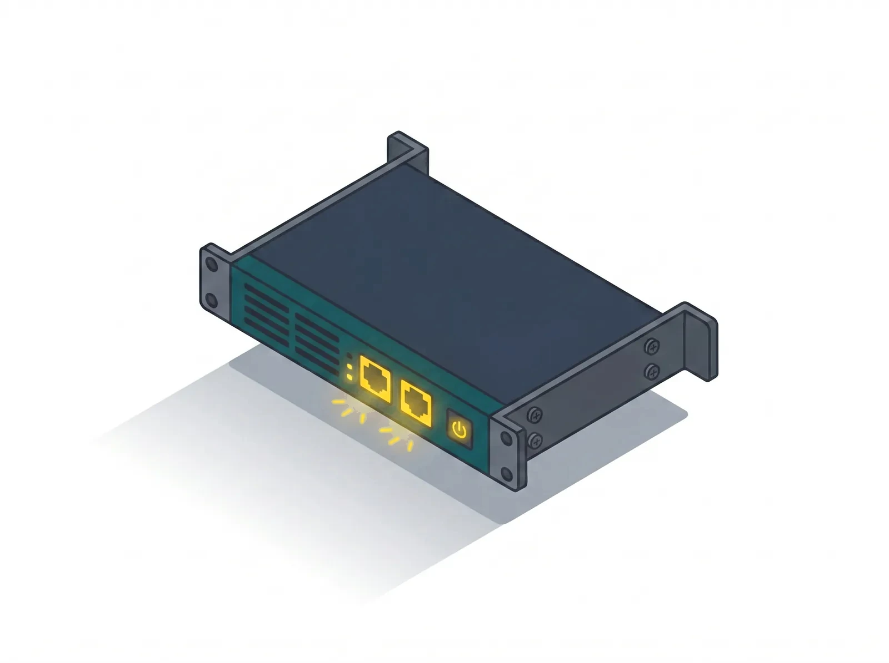

Turn Linux into a code-defined firewall
ansible-debian-firewall is a collection of Ansible roles for deploying standard Debian firewalls. It covers the base system, network configuration, nftables, VPN, dynamic routing and high availability without replacing Debian with a proprietary appliance.

What ansible-debian-firewall gives you
Free and open source
BSD-2-Clause. No edition, no paywall, no subscription.
Runs on your hardware
Built on Debian Linux: mini-PCs, servers, VMs and modern NICs.
Ansible-driven
Inventory and variables describe the target system. Ansible renders the configuration and applies it through standard Debian services.
Native, tested core
Every service integrated and tested together, upgraded as one.